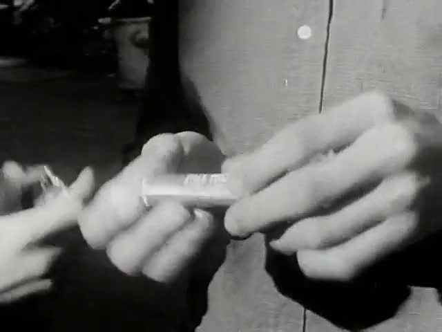
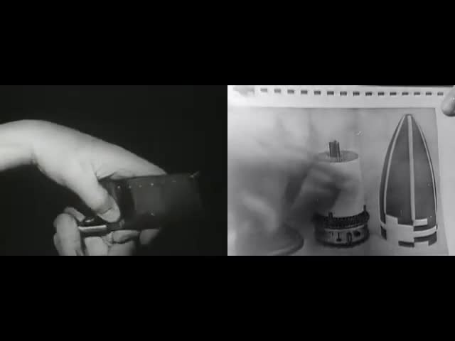
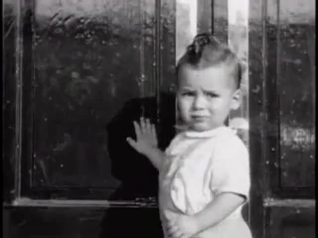
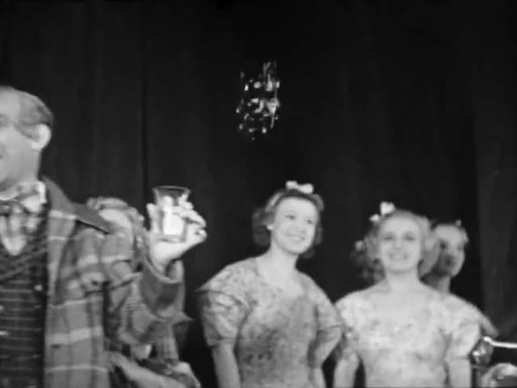
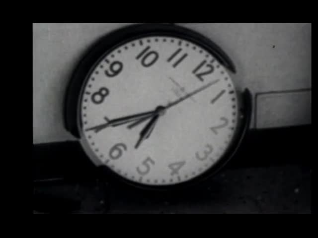
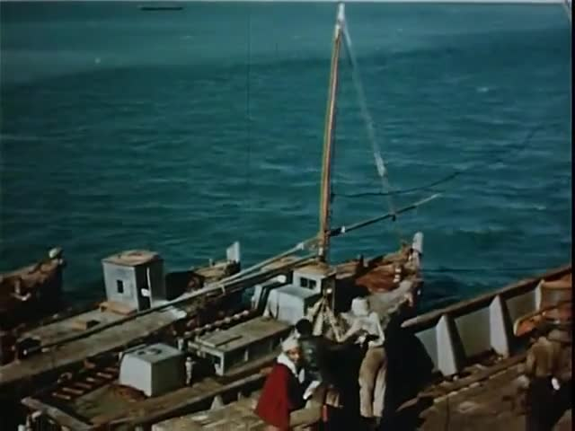
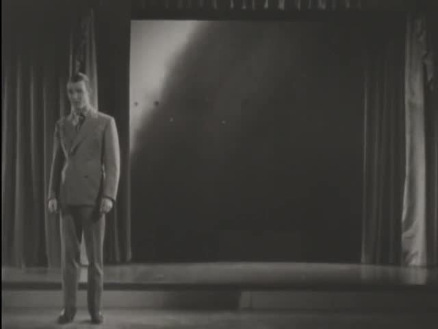
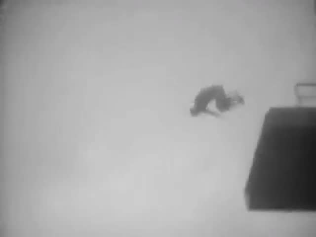

Sonnet
Eleven films, one for each conceptual-microfilm operator, foraged and cut by hand from public-domain footage on movingimagearchive.com. Every film comes with the images that were looked at, the reason for each shot, an independent critic round where one has run, and the prompts to make it again.
Other editions of the same operators sit beside this one on the editions page.
The films

Words
One verb, never shown, changes sense from cut to cut.
critic: pass (qualified) · repaired
Symmetry
Three pairs of unrelated films side by side, lining up and then parting.
critic review pending
Moments
Small events left to finish, with one long hold.
critic: inconclusive
Laughs
A chain of separate situations built from laughter; the sound is the weak part.
critic: inconclusive · ethics review open · repaired
Ball
One rim held at the centre of the screen across thirteen films.
critic: pass · repaired
Losers
A position explained by the room it is in; one staged 1953 film.
critic review pending · staged 1953 source
Matter
What materials keep after pressure, wet, heat and the cut.
critic: inconclusive · diagram now labelled
Colors
Three colour chapters joined by shots that hold two colours.
critic: pass (qualified)
Breath
Wind, steam and breath, kept apart. Failed the first critic round.
critic: fail · v2 needs new footage
Parabolas
Curves from different causes, with fitted guides drawn as models.
critic: pass
Five
Five practices from five sources, each given an uninterrupted action.
critic review pendingHow the edition was made
- Index5,505 archive shots held in a local cache: 405 clips with sound, 474 silent loops, 5,272 stills, each with the archive queries that returned it, CLIP subjects, colour and sound features.
- ForageText search first, then shape, colour and sound scans, then eyes: contact sheets of every clip, read frame by frame. The archive’s own search was unreachable, so nothing was searched live.
- ChooseEach shot picked for what its frames show, not for the words that found it. Substitutions for the prompts’ imagined scenes are listed in each film’s notes.
- CutAn edit list per film. Sources are only moved and uniformly scaled; nothing is mirrored, warped or retimed. 81 source shots in all.
- RenderOne renderer produces the film and a ledger: source film, year, archive page, time in the source and transform for every shot.
- CriticA separate agent reviewed eight of the films from frame sheets and sound levels. It could not listen. Three films have not been reviewed yet.
- RepairFour films repaired from the first round; four have open repairs. A human screening has not happened.
What this edition cannot claim
- Nobody has listened to or watched these at speed. Picture and sound were judged from still frames, cut lengths and sound-level plots.
- The critic is an AI agent. Its verdicts are readings, not audience results.
- The prompts imagine newly filmed material. These are found-footage substitutes, and each film says what it had to swap.
- Source footage keeps its holders’ rights; this is a research proof, not a release.